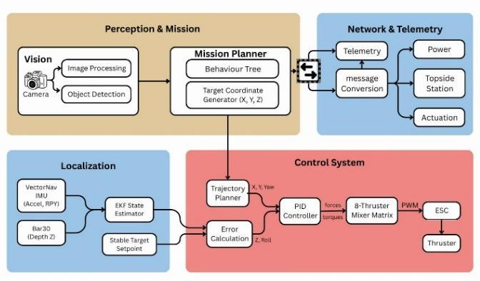
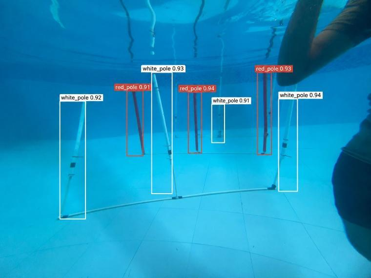
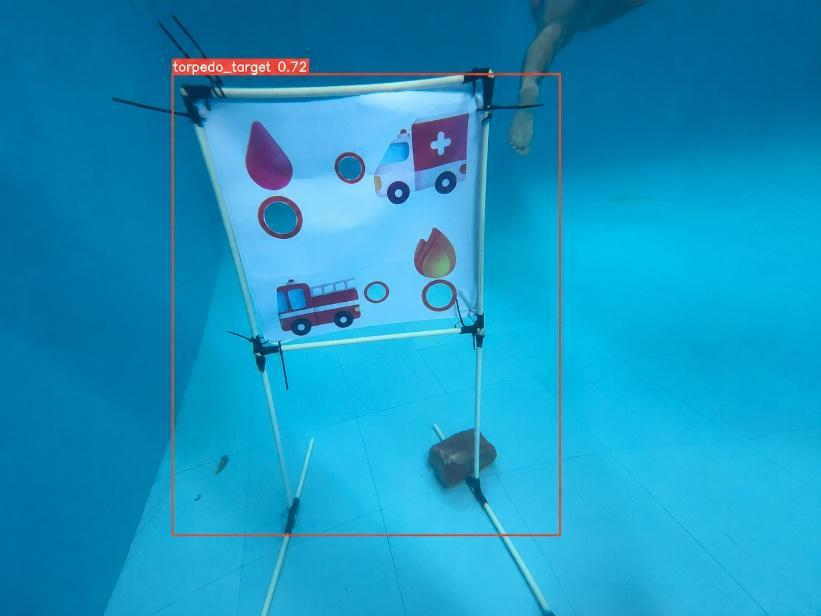
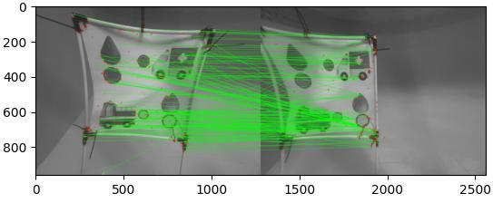
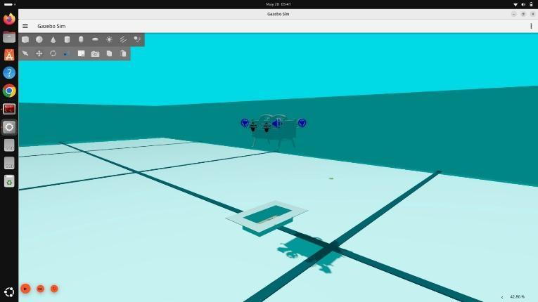
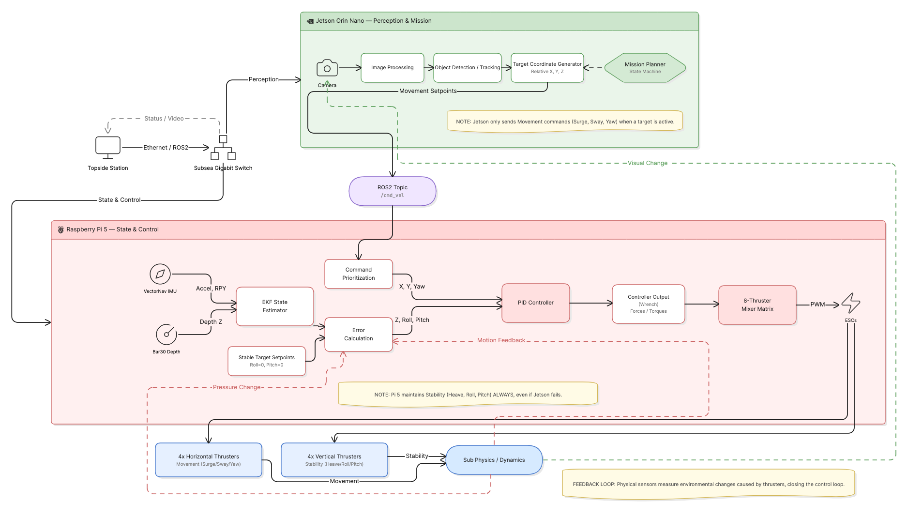
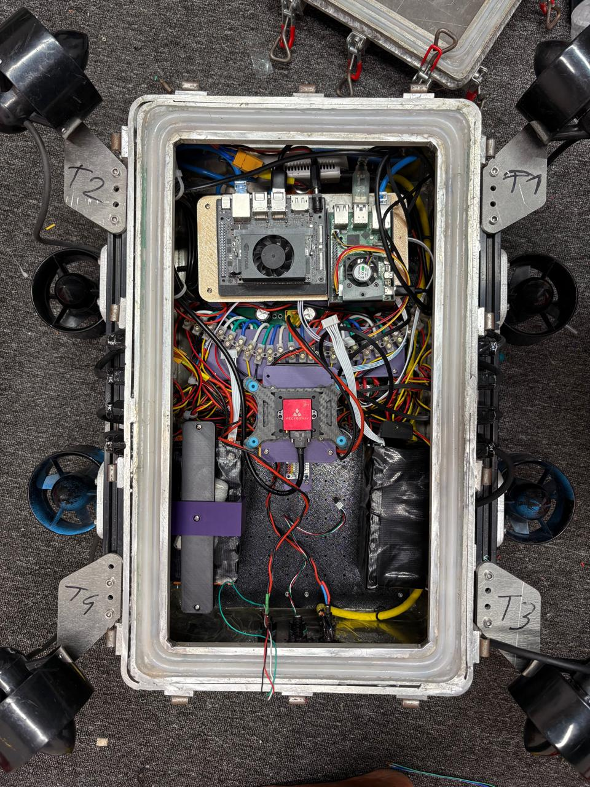

BengalSub · RoboSub 2026
Hangor 2.0 AUV
Hangor 2.0 is BengalSub’s reliability-focused autonomous underwater vehicle for RoboSub 2026. Building on the first platform, it combines a compact, unified aluminum enclosure with centralized electronics and modular ROS2 autonomy. The development strategy prioritizes reusable perception, navigation, and control capabilities to reduce integration complexity and make more time for testing.
View source on GitHub ↗
Modular ROS2 software
The software stack runs ROS2 Humble on the Jetson Orin Nano and ROS2 Jazzy on the Raspberry Pi 5. The Jetson handles perception and high-level mission functions, while the Raspberry Pi supports state estimation and control. Eclipse Cyclone DDS connects the two systems; communication tuning and topic-rate optimization addressed instability under heavy telemetry traffic.
Perception, localization, control, mission planning, and telemetry are organized as reusable modules. This separation makes subsystem testing and debugging easier while allowing the same autonomous capabilities to support multiple competition tasks.

Underwater object detection
YOLOv11 detects gates, markers, slalom poles, and deployment targets. Forward-facing and downward-facing camera views support approaching targets and aligning payload actions. Stereo RGB vision contributes depth information and spatial awareness.
The testing record describes reduced detection accuracy in low light and subsequent dataset augmentation to improve robustness. The accompanying frames show the detector’s labeled outputs on slalom poles and a torpedo target in the pool.


Target pose and vehicle localization
FLANN-based feature matching supports target-board localization during precision tasks such as torpedo deployment. Matching visual features helps the vehicle estimate the target pose before closed-loop alignment and payload release.
For vehicle state estimation, an Extended Kalman Filter combines the VectorNav IMU and Bar30 depth sensor. The report describes physics-informed motion constraints and disturbance filtering to improve consistency. Re-tuned PID gains and thruster allocation account for the updated vehicle’s mass distribution and inertia.

Simulation before deployment
Gazebo Harmonic provides a repeatable environment for testing sensor integration, localization, motion control, and mission autonomy before underwater deployment. The simulation scenes reproduce the vehicle and task structures so the team can inspect navigation behavior and debug interactions across the software stack.
The validation process progressed from individual modules to subsystem integration and pool trials. The report records corrections to timestamp alignment, EKF tuning during aggressive turns, navigation overshoot, and interrupted-mission recovery logic.

Mission planning and recovery
A BehaviorTree.CPP mission planner uses condition and action nodes to coordinate navigation, hovering, payload deployment, and recovery. Conditions monitor battery health, localization, obstacle clearance, and depth limits. ROS2 actions and services, together with XML mission configuration, support modular execution.
The competition strategy selects a focused mission set: gate traversal, Coin Flip, slalom, torpedo deployment, bins, and return to the stored gate location. These are the objectives described in the design report. Watchdogs and recovery behaviors support fault handling, while the hardware kill system disables thrusters without removing power from computing and sensing.

Reported validation results
Appendix C reports the following software and autonomy measurements from the team’s deployment and pool-validation work. They describe the reported test conditions rather than guaranteed performance in every underwater environment.
- YOLOv11 inference: 28–32 FPS on Jetson Orin Nano, with 48–72 ms camera-to-detection latency.
- Localization and control: 50 Hz EKF updates and 100 Hz PID updates; reported pool-trajectory localization error of ±7.2 cm.
- Mission execution: 20 Hz Behavior Tree tick rate and an 84% autonomous mission success rate across repeated pool trials.
- Recovery: response time below 0.9 seconds during simulated node failure.
A platform built for reliability
A unified pressure-sealed aluminum enclosure consolidates the electronics and reduces sealing interfaces. The centralized power-distribution system uses star grounding, protected ESC branches, bulk capacitance, and transient suppression to reduce electrical interference. Vacuum checks, submersion tests, buoyancy balancing, and pool trials complemented software validation.
